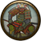

Stand & Fight
This ability is available to experienced generals, giving them an increased radius of influence that improves the melee attack and rate of fire of any of his own units caught within it. Allied troops do not benefit from the effects. The general sets up a command post with his bodyguard clustered around him, indicating that he will not consider retreat or surrender. This takes a while to set up and take down again, so instant toggling on or off is not possible. The general cannot use any other abilities whilst stand & fight is activated.